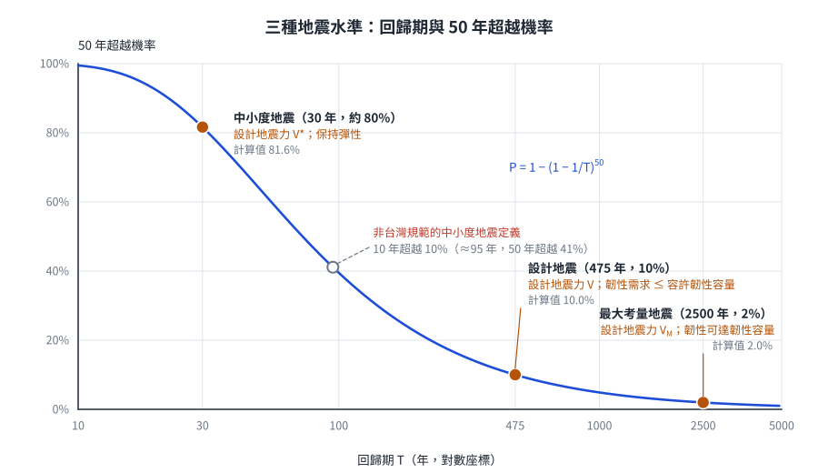

📄 題目正本：考卷原文・附圖・判讀清單（已確認）
SD-2009-3 題目正本
本檔只記錄考卷上寫了什麼、圖上畫了什麼，不含任何解法。解析見同資料夾
SD-2009-3.md。
判讀清單經使用者確認前，狀態為「待確認」；確認後本檔原則上不再修改（改動須回考卷原圖並記 log）。
| 項目 | 內容 |
|---|---|
| 考卷 | raw/exams/SD-2009_結構動力分析與耐震設計.pdf，全一頁，第三題（頁面中下方，第二題與第四題之間） |
| 考年 | 2009（民國98年）專技高考結構工程技師「結構動力分析與耐震設計」 |
| 配分 | 25 分（㈠12、㈡13） |
| 附圖 | 無（本題純文字；同頁右側附圖屬第一題、第四題） |
| 判讀狀態 | 已確認（2026-11-16，使用者授權依 Claude 建議。原轉錄：2026-11-16 轉錄；PyMuPDF 110 dpi 整頁＋220 dpi 局部目視，PDF 文字層核對原文；盲讀於開啟解析前完成） |
1. 考卷原文（逐字）
三、說明現行建築耐震設計規範考量的三種地震水準及耐震設計目標為何？
㈠說明規範耐震設計基本原則之條文。（12 分）
㈡解說規範考量的三種地震水準及耐震設計目標。（13 分）
2. 考卷給的公式、附表與參數
- 考卷沒有給公式、附表或數值參數（論述題）。
- 考卷沒有給：「現行」規範的版本或公布年份；三種地震水準的名稱、回歸期或超越機率。
- 卷首注意事項：㈠可以使用電子計算器，但需詳列解答過程。㈡不必抄題，作答時請將試題題號及答案依照順序寫在試卷上，於本試題上作答者，不予計分。㈢下列問題之相關公式、物理常數、符號意義及設計參數未提及時，請自行依規範作合理推斷或假設。考試時間：2 小時。
3. 附圖
本題無附圖。
4. 判讀清單
| # | 項目 | 判讀 | 圖上／題文依據 | 把握 |
|---|---|---|---|---|
| 1 | 「現行」規範的版本 | 考卷寫於民國 98 年，「現行」原指當年施行版；依本庫規範版本規則，主線改以現行最新《建築物耐震設計規範及解說》（111 年版）作答，§5 註明與考試當年版本差異。定案：採現行 111 年版 | 題文「現行建築耐震設計規範」；根目錄 CLAUDE.md「規範版本」 | 不確定（解讀）；定案如左，理由：題目未指定版本，本庫規則一律用現行版 |
| 2 | ㈡「解說」一詞 | 作動詞「解釋說明」讀；作答可引用規範解說內容，但不限於逐字引述解說。定案：動詞 | 題文「㈡解說規範考量的…」，與㈠「說明」並列 | 不確定（解讀）；定案如左，理由：與㈠句型對稱，不影響作答範圍 |
| 3 | ㈠所指條文 | 規範總則中「耐震設計基本原則」那一條（說明耐震設計的基本精神與目標的條文） | 題文「規範耐震設計基本原則之條文」 | 確定（解讀） |
| 4 | 題幹與小題關係 | 題幹為總問句，㈠、㈡為配分小題；㈠問條文、㈡問三種地震水準與對應設計目標 | 題文版面：題幹一行，㈠㈡各自標分數 | 確定 |
| 5 | 配分 | ㈠12 分、㈡13 分，合計 25 分 | 題文 | 確定 |
| 6 | 考卷沒有給 | 三種地震水準的名稱、回歸期、超越機率，以及各水準下的性能要求，均需考生自行依規範作答 | 題文 | 確定 |
轉錄：2026-11-16（SD-U2-2 題目正本推廣・組 U2-2-G3）
確認：2026-11-16 使用者授權依 Claude 建議確認（SD-U2-2 題目正本推廣・組 U2-2-G3，關卡一）
考題編號：SD-2009-3
主分類： SD-U2-2 建築耐震設計規範
副分類： SD-U2-1 地震力之設計規範
分析方法： 概念題（規範論述）
標籤： 三水準地震 設計地震 中小地震 最大考量地震 耐震設計目標 小震不壞 中震可修 大震不倒 耐震設計基本原則 回歸期 超越機率 韌性折減係數 性能設計
1. 題目（考卷原文見題目正本）
考卷原文、公式／附表、附圖與判讀清單（已確認）見
SD-2009-3-problem.md。本節只列解題時最容易讀錯的地方與本解使用的記號；題意以題目正本為準。
本題為純文字論述題，考卷無附圖。
常見誤讀
| 項目 | 正確判讀 | 常見誤讀 |
|---|---|---|
| 規範版本 | 題文「現行」原指民國 98 年當時版本，依本庫規則以現行《建築物耐震設計規範及解說》（111 年版）作答，考試當年版本差異放 §5（判讀 #1） | 照考試當年版本作答而未註明 |
| ㈠所問 | 規範總則中「耐震設計基本原則」那一條條文（判讀 #3） | 只寫三種地震水準，漏答基本原則條文 |
| 題幹與小題 | 題幹為總問句；㈠12 分問條文、㈡13 分問三種地震水準與對應設計目標（判讀 #4、#5） | 兩小題內容混寫、配分失衡 |
| 考卷沒有給 | 三種地震水準的名稱、回歸期、超越機率與性能要求皆須自行依規範作答（判讀 #6） | 把本解補充的回歸期數值當考卷給定 |
| 中小度地震的定義 | 回歸期約 30 年、50 年超越機率約 80%（現行規範 2.10.1 解說、1.2 解說） | 10 年超越機率 10%、回歸期約 95 年（本庫舊解 2026-11-16 前的寫法） |
本解記號： 本解以「中小度地震／設計地震／最大考量地震」稱三種地震水準；回歸期與超越機率為本解依規範補充，考卷未給（判讀 #6）。
2. 考題核心精神與出題者意圖（Core Concepts & Examiner's Intent）
核心觀念： 現行《建築物耐震設計規範及解說》（內政部 111 年版）第 1.2 節「耐震設計基本原則」把三種地震水準與三種性能要求寫在同一條條文裡：中小度地震保持彈性、設計地震容許塑性變形但韌性需求不得超過容許韌性容量、最大考量地震可用到規定的韌性容量。第二章再以 $V^*$、$V$、$V_M$ 三個設計地震力把這三個水準落實成數字。
出題者意圖：
- ㈠ 能否寫出基本原則條文的三段內容（不是泛泛的「安全與可使用」）
- ㈡ 三種地震水準的定量定義（回歸期、50 年超越機率）與對應的性能目標
- 能否把三個水準和規範的三個設計地震力 $V^*$、$V$、$V_M$ 以及韌性（容許韌性容量 $R_a$、韌性容量 $R$）連起來
3. 解題戰略地圖與陷阱分析（Strategic Roadmap & Trap Analysis）
陷阱：
| # | 陷阱 | 說明 |
|---|---|---|
| ❶ | 中小度地震的定義 | 回歸期約 30 年、50 年超越機率約 80%（規範 2.10.1 解說）；常把它和其他規範的「小地震」定義混用（見 §1 常見誤讀） |
| ❷ | 最大考量地震的定義 | 50 年超越機率 2%、回歸期 2500 年（規範 2.3 節）；工址譜加速度另以最大考量地震的係數（$S_S^M$、$S_1^M$ 系列）給定，不是設計地震乘固定倍數 |
| ❸ | 「中震可修」的「中震」 | 即設計地震（475 年回歸期），不是字面意義的「中等強度地震」 |
| ❹ | 條文不能自己編 | ㈠ 要寫 1.2 節原意的三段，不是寫「維持安全性與可使用性」之類泛稱；公式用台灣形式（含 $1.4\alpha_y$、$F_u$），不要套美式反應修正係數 $R$ 的寫法 |
3.5 變數層次分析（Variable Hierarchy Analysis）
複習提示：第一次解題後，在每個卡住的知識點旁標記
⚠；第二次複習時只看有⚠的項目。
最終目標
寫出 1.2 節基本原則三段，並論述三種地震水準的定量定義（回歸期/超越機率）、性能目標與對應設計地震力
L1：題目直接給定
（概念題，考卷沒有給任何數值；以下為須依規範作答的核心）
| 地震水準 | 50 年超越機率 | 回歸期 | 性能目標 | 對應設計地震力 |
|---|---|---|---|---|
| 中小度地震 | 約 80% | 約 30 年 | 結構體保持彈性、不損壞（小震不壞） | $V^*$（2.10.1） |
| 設計地震 | 10% | 475 年 | 容許塑性變形，韌性需求 ≤ 容許韌性容量（中震可修） | $V$（(2-1) 式） |
| 最大考量地震 | 2% | 2500 年 | 韌性可用到韌性容量，防止崩塌（大震不倒） | $V_M$（2.10.2） |
L2：需知識點推導
| 知識點 | 內容 | 卡關? |
|---|---|---|
| 回歸期與超越機率 | $P=1-(1-1/T_R)^{n}$；$n=50$ 年：30 年→81.6%、475 年→10.0%、2500 年→1.98% | |
| 容許韌性容量 $R_a$ 與韌性容量 $R$ | 設計地震用 $R_a$ 算 $F_u$；最大考量地震用 $R$ 算 $F_{uM}$ | |
| 三個設計地震力 | (2-1) 式之最小總橫力不得低於 $V^*$（避免中小度地震降伏）與 $V_M$（避免最大考量地震崩塌） |
L3：深層知識（不懂就卡住）
| 知識點 | 說明 | 卡關? |
|---|---|---|
| 為何中小度地震用 30 年 | 30 年回歸期地震在 50 年使用年限內超越機率約 80%，幾乎一定會遇到，所以要求不損壞、免修補（2.10.1 解說） | |
| $V^*$ 的大小 | 解說：約為 475 年「未折減」地震力的 $1/4.2$（臺北盆地 $1/3.5$），且不用韌性折減 | |
| 中小度地震的位移檢核 | 同一水準的地震力下層間相對側向位移角不得超過 0.005（2.16.1），保護非結構構材 |
4. 詳細論述（Step-by-Step）
（一）耐震設計基本原則之條文（12 分）
依現行《建築物耐震設計規範及解說》（內政部 111 年版）第一章總則第 1.2 節：
「本規範耐震設計之基本原則，係使建築物結構體在中小度地震時保持在彈性限度內；設計地震時容許產生塑性變形，但韌性需求不得超過容許韌性容量；最大考量地震時則使用之韌性可以達規定之韌性容量。」
條文三段的意義：
| 段落 | 地震水準 | 要求 | 規範如何落實 |
|---|---|---|---|
| ① | 中小度地震 | 結構體保持在彈性限度內 | 2.10.1：設計總橫力不得低於 $V^*$，式中不用韌性折減；2.16.1：層間相對側向位移角 ≤ 0.005 |
| ② | 設計地震 | 容許塑性變形，但韌性需求 ≤ 容許韌性容量 $R_a$ | (2-1) 式 $V=\dfrac{S_{aD}I}{1.4\alpha_y F_u}W$（$F_u$ 由 $R_a$ 求得，並依 (2-2) 式修正為 $(S_{aD}/F_u)_m$） |
| ③ | 最大考量地震 | 使用的韌性可達規定韌性容量 $R$ | 2.10.2：設計總橫力不得低於 $V_M=\dfrac{I}{1.4\alpha_y}\left(\dfrac{S_{aM}}{F_{uM}}\right)_m W$（$F_{uM}$ 以 $R$ 代替 $R_a$ 求得） |
$$V^*=\frac{I\,F_u}{4.2\,\alpha_y}\left(\frac{S_{aD}}{F_u}\right)_m W\quad\text{（臺北盆地分母改為 }3.5\alpha_y\text{）}$$
答題時可補充的配套原則（屬第一章其他條文與設計慣例，非 1.2 節原文）：
- 容量設計：塑性變形要發生在預定位置（如梁端塑鉸），避免剪力等脆性破壞先發生；強柱弱梁為其核心。
- 用途係數 $I$：依建築物用途分類放大地震力。
- 規則性與動力分析：高度達 50 公尺或 15 層以上，或超過 20 公尺或 5 層以上且具表 1-1 第 1～3 種立面不規則性或表 1-2 平面扭轉不規則性者，須做動力分析（3.1 節）。
（二）三種地震水準及耐震設計目標（13 分）
規範以三種地震水準對應三種性能目標（多重性能目標），依據為第 1.2 節解說與第 2.3、2.10 節：
第一水準：中小度地震
| 項目 | 內容 |
|---|---|
| 超越機率 | 50 年超越機率約 80% |
| 平均回歸期 | 約 30 年 |
| 地震力大小 | $V^*$：約為 475 年未折減地震力的 $1/4.2$（臺北盆地 $1/3.5$），不用韌性折減 |
| 耐震性能目標 | 「小震不壞」——結構體保持彈性、不產生損壞，震後免修補 |
設計目標說明： 30 年回歸期地震在 50 年使用年限內超越機率約 80%，發生機率相當高（2.10.1 解說），所以要求結構體不損壞；同一地震水準下另以層間相對側向位移角 ≤ 0.005 限制變形，避免非結構構材在地震不大時即破壞（2.16.1）。
第二水準：設計地震
| 項目 | 內容 |
|---|---|
| 超越機率 | 50 年超越機率 10% |
| 平均回歸期 | 475 年 |
| 地震力大小 | 工址設計譜 $S_{DS}$、$S_{D1}$；設計總橫力 $V=\dfrac{S_{aD}I}{1.4\alpha_yF_u}W$ |
| 耐震性能目標 | 「中震可修」——容許梁端等預定位置形成塑鉸消能，但韌性需求不得超過容許韌性容量，避免不可修復的損壞 |
設計目標說明： 設計地震是規範主要設計基準。以容許韌性容量 $R_a$（而非韌性容量 $R$）求 $F_u$，留有餘裕，使損壞控制在可修復範圍。
第三水準：最大考量地震
| 項目 | 內容 |
|---|---|
| 超越機率 | 50 年超越機率 2% |
| 平均回歸期 | 2500 年 |
| 地震力大小 | 工址最大考量地震譜加速度 $S_{aM}$；設計總橫力不得低於 $V_M$ |
| 耐震性能目標 | 「大震不倒」——容許使用到規定的韌性容量，防止崩塌 |
設計目標說明： 地震水準已極高，目標只剩防止崩塌、保護人命；規範以 $V_M$（用韌性容量 $R$ 求 $F_{uM}$）確保結構在最大考量地震下的韌性需求不超過其韌性容量。
三種水準整合比較
| 地震水準 | 50 年超越機率 | 回歸期 | 對應設計地震力 | 性能目標 | 結構行為 |
|---|---|---|---|---|---|
| 中小度地震 | 約 80% | 約 30 年 | $V^*$ | 小震不壞 | 彈性 |
| 設計地震 | 10% | 475 年 | $V$ | 中震可修 | 塑性變形 ≤ 容許韌性容量 |
| 最大考量地震 | 2% | 2500 年 | $V_M$ | 大震不倒 | 韌性可達韌性容量，不崩塌 |

圖 1 三種地震水準在同一條 $P=1-(1-1/T)^{50}$ 曲線上的位置。中小度地震在 50 年內幾乎一定會遇到（約 80%），所以要求不損壞；圖中灰點「10 年超越 10%」換算成 50 年超越約 41%，不是台灣規範的中小度地震——本圖攔的就是這個混用。
三水準設計哲學的核心邏輯
地震強度：小 ─────────────────────────────→ 大
中小度地震(30年) 設計地震(475年) 最大考量地震(2500年)
性能要求：不損壞 ─────→ 可修復 ─────────→ 不崩塌
結構行為：彈性 ─────────→ 韌性需求≤Ra ──→ 韌性需求≤R
設計力 ：V* ─────────→ V ─────────────→ VM
此三水準設計哲學反映「以合理的工程成本換取合理的生命安全與財產保護」的社會共識，是性能導向耐震設計的基礎。
5. 關鍵爭議點與進階探討（Critical Issues & Advanced Discussion）
5.1 規範版本：考試當年與現行版
題文「現行」原指民國 98 年考試當時施行的版本；本解依本庫規範版本規則改以現行 111 年版作答。三水準架構（中小度地震／設計地震／最大考量地震）與第 1.2 節基本原則的三段內容是現行版條文（已核對原文）；考試當年版本的細部係數若有差異，答題時以作答當時的現行版為準。
本庫舊解（2026-11-16 前）的錯誤，留此對照：
- 中小度地震寫成「10 年超越機率 10%、回歸期約 95 年、約設計地震的 1/2～1/3」——不是台灣規範的定義；正確為 50 年超越機率約 80%、回歸期約 30 年，$V^*$ 約為 475 年未折減地震力的 $1/4.2$。
- ㈠ 引了一段非規範原文的「目標」條文，公式寫成美式 $V=S_aI_EW/R$，並寫「$V_{min}=0.4S_{DS}I_EW/R$（短週期下限）」——$0.4S_{DS}$ 是靜力分析時工址設計譜加速度係數的下限，用意是避免長週期建築物設計地震力過低（2.2 節），不是短週期下限。
- 最大考量地震寫成「以韌性容量驗證，而非直接計算地震力」——現行規範另有 $V_M$ 式（2.10.2）。
5.2 為何以 475 年回歸期作為設計地震？
若建築物使用年限為 50 年，則 475 年回歸期地震在 50 年內的超越機率為：
$$P(\text{超越}) = 1 - \left(1 - \frac{1}{475}\right)^{50} \approx 10\%$$
同理，30 年回歸期 → $1-(1-1/30)^{50}\approx 82\%$（規範解說取約 80%）；2500 年回歸期 → $\approx 2\%$。
5.3 考場答題策略
此題為概念論述題，評分重點在：
- 基本原則條文三段（中小度地震彈性／設計地震韌性需求 ≤ 容許韌性容量／最大考量地震可達韌性容量）要寫完整
- 三個水準的定量指標（回歸期 30、475、2500 年；50 年超越機率約 80%、10%、2%）必須正確，是得分關鍵
- 三個性能目標（小震不壞、中震可修、大震不倒）與三個設計地震力 $V^*$、$V$、$V_M$ 明確對應
- 公式用台灣規範形式，不要套美式 $R$、$I_E$ 寫法
修正日期：2026-11-16（§1 改為指向題目正本；純文字題無附圖，不重繪）
修正日期：2026-11-16（勘誤（規範條文、觀念）：中小度地震由「10 年超越機率 10%、回歸期約 95 年」改為「50 年超越機率約 80%、回歸期約 30 年」；㈠ 改引現行 111 年版第 1.2 節基本原則條文三段，公式改台灣形式（V、V、VM），刪除「0.4SDS 短週期下限」錯誤敘述；最大考量地震回歸期 2475 改 2500 年並補 VM；全文改依現行台灣規範（建築物耐震設計規範及解說，111 年版）。證據：規範原文第 1.2 節及解說、2.3、2.10.1 解說、2.10.2、2.16.1（國土管理署 PDF）；驗證：scripts/fixes/2026-11-16_verify_SD-2009-3.py，MISMATCHES: 0）*
修正日期：2026-11-16（非勘誤）圖解補繪：figs/SD-2009-3-fig-1-hazard-levels.svg（三種地震水準的回歸期與 50 年超越機率；向量圖，腳本 gen_SD-2009-3.py，可重跑）